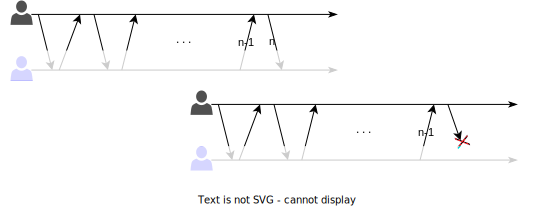
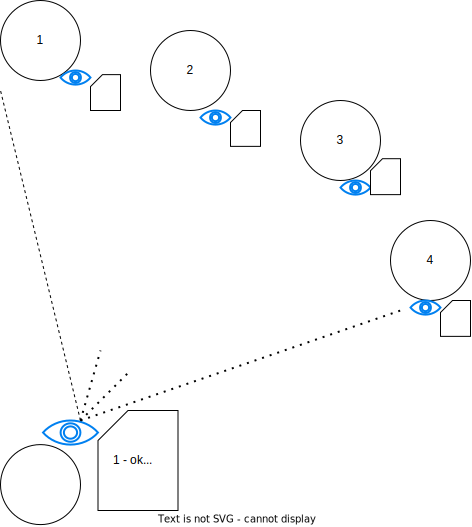
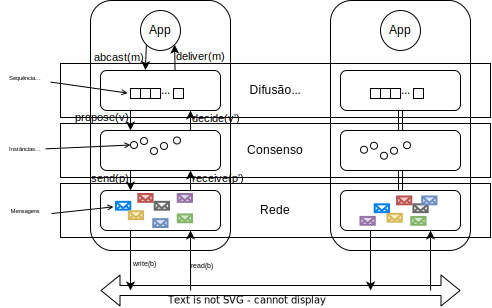

Tolerância a Falhas
Tolerância a Falhas
Nós escrevemos software para que resolvam problemas de espectro bem amplo, indo, do controle de braços robóticos em cirurgias remotas à sistemas de comércio eletrônico, do controle de usinas hidroelétricas à jogos de truco online. Independentemente do problema sendo resolvido, gostaríamos de poder contar com o sistema, de poder depender nele para executar sua tarefa. Desta situação, surge a ideia de dependabilidade, isto é, de um sistema ter a propriedade de se poder depender do mesmo.
Dependabilidade
Dizemos que um componente \(C\) depende de um componente \(C'\) se a corretude do comportamento de \(C\) depende da corretude do componente \(C'\). Dizemos também que um componente é "dependável" (dependable) na medida em que outros podem depender dele. A dependabilidade é essencial aos componentes de sistemas distribuídos, pois como diz o ditado, uma corrente é tão forte quanto seu elo mais fraco.
De acordo com Avizienis et al, tem-se dependabilidade quando os seguintes atributos estão presentes.
- Disponibilidade (Availability) - Prontidão para uso.
- Confiabilidade/Fiabilidade (Reliability) - Continuidade do serviço.
- Segurança (Safety) - Tolerância a catástrofes.
- Integridade (Integrity) - Tolerância a modificações.
- Manutenabilidade (Maintainability) - Facilidade de reparo.
Além da dependabilidade, outra propriedade importante e desejável para os sistemas é a Confidencialidade, que quando combinada à Integridade e Confidencialidade é também chamada de Segurança (Security).
- Confidencialidade (Confidentiality) -- informação somente é acessível a quem é devido.
Aqui nós nos focaremos apenas na disponibilidade que, por si só, é bem abrangente:
Disponibilidade
The term 'availability' means ensuring timely and reliable access to and use of information.
NIST SP 800-59, no termo Availability 44 U.S.C., Sec. 3542 (b)(1)(C))
Mais especificamente, sobre como manter um sistema online para que possa responder a requisições, mesmo quando problemas aparecem. Mas para isso, primeiro precisamos entender os tipos de problemas que aparecem em vários níveis, desde o seu desenvolvimento até seu uso.
Falhas, Erros e Defeitos
No nível mais básico dos problemas a serem contornados para se obter dependabilidade, temos as falhas (defect, fault, para alguns, falta), que é um erro no desenvolvimento do sistema, como bugs ou defeitos de fabricação, que o leva a ficar diferente do que foi especificado, ou mesmo um erro na especificação.
Uma falha existe mesmo se for raramente ativada e mesmo se seus efeitos nunca forem percebidos.
Por exemplo, se o código tem um <= em vez de < na especificação de uma iteração, mas se uma condição faz com que a iteração seja interrompida antes, o código ainda tem uma falha.
1 2 3 4 5 6 7 8 9 10 11 12 13 | |
No segundo nível, temos o erro (error), que é a manifestação da falha levando a algum comportamento indevido. No exemplo acima, um erro seria quando a iteração passasse do ponto correto por causa do <=, por exemplo, na hora de escrever uma string em um array, estourando o limite do array na pilha mas sobrescrevendo uma variável que não seja mais usada.
O erro pode passar despercebido, mas ainda assim é um erro.
Finalmente, no terceiro nível, temos os defeitos (failure, para alguns, falha), um erro percebido pelo usuário. Continuando o exemplo, um stack overflow que leva a uma falha de segmentação, leva a um defeito.
Quando um componente manifesta um defeito, outros componentes que dele dependem, internalizarão entradas indevidas, uma falha externa, o que levará a seu próprio estado interno a estar errôneo e possivelmente também manifestar um defeito. Esta cadeia pode levar cenários catastróficos.
Falhas Famosas
O Ariane 5 foi um foguete desenvolvido pela agencia espacial européia que explodiu durante o lançamento.
The Explosion of the Ariane 5
On June 4, 1996 an unmanned Ariane 5 rocket launched by the European Space Agency exploded just forty seconds after its lift-off [...] after a decade of development costing $7B. The destroyed rocket and its cargo were valued at $500M. [...] the failure was a software error [...] a 64 bit floating point number [...] was converted to a 16 bit signed integer. The number was larger than 32,767, the largest integer storeable in a 16 bit signed integer, and thus the conversion failed.

O erro gerado foi tratado como input, causando outros erros, que geraram instabilidade e que levou o sistema a se auto-destruir.
O avião 787 dreamliner, da Boeing, tem um problema que torna necessário reiniciar o sistema elétrico a cada 248 dias, ou o mesmo pode ter uma pane.
Quote
The plane’s electrical generators fall into a failsafe mode if kept continuously powered on for 248 days. The 787 has four such main generator-control units that, if powered on at the same time, could fail simultaneously and cause a complete electrical shutdown.
Segundo as "más línguas", o problema é que acontece um overflow em um contador de tempo
Quote
248 days == 2^31 100ths of a second.
— Fiora @ 日本語でFF14 (@FioraAeterna) May 1, 2015
even in 2015, our airplanes have integer overflow bugs https://t.co/6Z8d4y9gjM
O Boeing 737 Max é uma modificação do 737 original em que o motores maiores foram usados sem modificar a estrutura do restante do avião e portanto alterando o seu centro de massa. Por causa da diferença, o avião pode subir rápido demais, correndo o risco de perder sustentação. Para auxiliar os pilotos e evitar a necessidade de treinamento específico, um sensor é usado para detectar se o avião está nesta situação e forcar o nariz do avião para baixo para corrigir o problema. Contudo, no 737 Max apenas um sensor é usado e no caso de falha do mesmo, o avião é forçado para baixo e em direção ao solo, o que levou à morte de centenas de pessoas.1
Em 2018 a Subaru fez um recall gigante, de mais de 1 milhão de unidades de um seus modelos de SUV, porquê uma falha em um software fez com que soldagens fossem feitas incorretamente no chassis dos veículos. O erro era irreparável, levando a grandes prejuízos.
![[Recall Subaru()https://spectrum.ieee.org/riskfactor/computing/it/coding-error-leads-293-subaru-ascents-to-the-car-crusher)]](../images/subaru.png)
Quando defeitos aparecem, é importante identificar suas causas, isto é, a cadeia de eventos que os levaram a acontecer. Algumas empresas até publicam as root cause analysis ou a análise post-mortem para a comunidade como forma de compartilhar conhecimento e também por questões de transparência, mas mais importante, conhecer a causa pode ajudar a evitar que novas instâncias da mesma falha ou similares, 2 aumentando a dependabilidade do sistema.
Classes de Defeitos
Falhas são um fato da vida, uma constante no desenvolvimento de sistemas, mas se precisamos lidar com elas, previnindo e tolerando sua presença, precisamos entender como se manifestam e, para isso, uma classificação é essencial.
Quebra
Defeitos de quebra (crash) são defeitos em que o componente para de funcionar, irreversivelmente. Uma vez que o componente cessa seu funcionamento, qualquer comunicação com o mesmo é interrompida e pode dar bons indicativos do defeito aos outros componentes. Em um sistema assíncrono, contudo, não há garantias de que esta detecção do defeito será correta.
Alguns sistemas, denominados fail-stop, forçam-se a parar de funcionar quando percebem um defeito, imitando uma quebra, e implementando um comportamento fail-fast.3 Estes sistemas podem emitir um "canto do cisne" para permitir que outros componentes detectem o defeito.
Após pararem, alguns sistemas podem aplicar passos de recuperação e voltar a funcionar, no que é denominado fail-recover. Ao retornar à operação, o processo poderia assumir uma nova identidade.
Omissão
Em um defeito de omissão (omission failure), um componente não executa alguma ação. Por exemplo, uma requisição recebida por um servidor não é executada, um disco não armazena os dados no meio magnético, ou uma mensagem não é transmitida. Este tipo de defeito é difícil de ser identificado pois outros componentes não necessariamente tem acesso direto ao resultado da operação. Por exemplo, se o meio de comunicação se recusou a entregar uma mensagem, então houve um defeito de omissão. Mas se a mensagem é retransmitida até que tenha sua entrega confirmada, então o defeito é mascarado.
Temporização
Em sistemas em que há limites de tempo para a execução de ações, uma violação destes limites é defeito de temporização. Por exemplo, se o meio de comunicação se recusou a entregar uma mensagem, então houve uma falha de omissão. Novamente considerando problemas de transmissão de mensagens, se o meio de comunicação se recusou a entregar uma mensagem que deveria ser entregue dentro de 3ms, então houve um defeito de omissão. Mas se a mensagem é retransmitida até que tenha sua entrega confirmada, mas a mesma é entregue com 5ms, então o defeito é mascarado como um defeito de temporização. Defeitos de temporização podem acontecer devido a problemas de sincronização de relógios, como no algoritmo de difusão totalmente ordenada visto anteriormente.
Arbitrários
Um defeito arbitrário ou bizantino é um no qual qualquer comportamento pode acontecer. Por exemplo, uma mensagem pode ser modificada, um servidor pode reiniciar-se constantemente, todos os dados podem ser apagados, ou acesso pode ser dado a quem não é devido. Estes defeitos podem ser causados por agentes mal intencionados, como hackers e vírus.
Hierarquia
Os tipos de defeitos apontados acima podem ser hierarquizados como a seguir, o que quer dizer que uma quebra é apenas uma omissão por tempo infinito:
Fail-stop \(\subset\) Quebra \(\subset\) Omissão \(\subset\) Temporização \(\subset\) Arbitrária
Defeitos intermitentes
Alguns defeitos fogem à classificação acima por terem um comportamento especial, se manifestando de forma intermitente, por causa de eventos esparsos como picos de energia, ou pelo comportamento emergente da interação com outros sistemas. Para capturar estas idiossincrasias, recorremos a uma outra classificação, bem informal.
Bohrbug
A BohrBug is just your average, straight-forward bug. Simple like the Bohr model of the atom: A smallsphere. You push it, it moves. BohrBugs are reproducible, and hence are easily fixed once discovered. These are named after Niels Bohr, who proposed a simple and easy-to-understand atomic model in 1913. In Bohr’s model, things like the path and momentum of an electron in an atom are predictable.
Heisenbug
A bug that disappears or alters its behavior when one attempts to probe or isolate it. No matter how much time and effort is spent trying to reproduce the problem, the bug eludes us. Such bugs were named Heisenbugs, after Werner Heisenberg, who is known for his “uncertainty principle”. According to his theory, it is not possible to accurately or certainly determine the position and velocity of an electron in an atom at a particular moment.
Mandelbug
When the cause of the bug is too complex to understand, and the resulting bug appears chaotic, it is called a Mandelbug. These are named after Benoît Mandelbrot, who is considered the father of fractal geometry (fractals are complex, self-similar structures). A bug in an operating system that depends on scheduling is an example of a Mandelbug.
Schroedinbug
Sometimes, you look into the code, and find that it has a bug or a problem that should never have allowed it to work in the first place. When you try out the code, the bug promptly shows up, and the software fails! Though it sounds very uncommon, such bugs do occur and are known as Schroedinbugs. They are named after the scientist Erwin Schrödinger, who proposed that in quantum physics, quantum particles like atoms could exist in two or more quantum states.
Fractal Bugs
A bug, after which its resolution is found, reveals additional self-similar bugs elsewhere in the code, after which they are fixed, likewise appear elsewhere still.
Correlação entre falhas
Algumas falhas são ativadas por entradas e, neste caso, mesmo que se tenha várias cópias do mesmo sistema, todas falharão uma vez que a entrada problemática acontecer. Este é um cenário em que as falhas não são independentes, mas correlatas. Para evitá-lo, podemos usar n-version programming, que consiste basicamente em ter múltiplas implementações do mesmo sistema desenvolvidas de forma independente, isto é, fazendo uso de um ou mais da seguintes opções:
- múltiplos times
- múltiplos sistemas operacionais
- múltiplas linguagens de programação.
Esta técnica é interessante mais raramente usada, basicamente pelo seu alto custo. Além disso, erros de especificação são reproduzidos e levam times diferentes a produzir erros iguais.
Falhas Bizantinas
Todo
- exércitos bizantino
Como lidar com falhas?
Mas se o objetivo é a dependabilidade, isto é, ter o sistema pronto para uso e apto a manter este estado durante o período de uso, mesmo na presença de catástrofes, precisamos de formas de lidar com falhas, previnindo, removendo e tolerando-as.
A prevenção de falhas acontece por meio de técnicas bem estabelecidas de engenharia. No caso de sistemas de software, modularização, uso de linguagens de programação fortemente tipadas e encapsulamento são passos importantes. Outras técnicas envolvidas na prevenção de falhas são análise estática, especificação formal, teste e prova destas especificações. Por exemplo, diversas empresas usam linguagens como TLA\(^+\)4 e Promela, associados a verificadores de modelo como TLC e Spin, respectivamente, para testar e verificar a corretude de seus algoritmos.
Mesmo uma especificação correta pode produzir um sistema com falhas pois a tradução de especificações formais para código é um passo complexo. Testes e manutenção do sistema permitem a remoção de falhas que passarem despercebidas pelas tentativas de prevenção.
Testes, contudo, apenas aumentam a confiança no sistema, não sendo capazes de certificar a ausência de problemas. Assim, tenta-se desenvolver os sistemas de forma que, mesmo se falhas ainda estiverem presentes, seus efeitos não sejam percebidos como defeitos, isto é, sistemas que tenha tolerância a falhas (ou prevenção de defeitos).
Para se alcançar tolerância a falhas é necessário detectar e se recuperar de erros. Por exemplo, um sistema de arquivos que mantenha um journal, como o Ext v3, armazena informação de forma redundante e, quando detecta que os dados em sua forma principal estão corrompidos, usa o journal para recuperar os dados, mascarando o erro.
De acordo como Avizienis et al., temos as seguintes técnicas para tolerar falhas:

Um sistema que sofra de defeitos recorrentes é um bom candidato a previsão de defeitos, em que se estima quando uma falha ocorrerá baseado no histórico. Por exemplo, um sistema que sofra falha por uso excessivo de memória a cada dez dias em uso, pode ser reiniciado no nono dia, em condições controladas, para evitar problemas maiores enquanto a razão do uso excessivo de memória é corrigido.
Se remover todas as possibilidades de defeitos de um componente é algo difícil, apostemos na tolerância a falhas. De forma geral, tolerância a falhas é obtida por algum tipo de redundância. Redundância pode ser aplicada em vários níveis, por exemplo, gastando mais tempo na especificação do projeto, ou montando um laboratório de testes mais próximo do ambiente de produção.
Outra forma óbvia de redundância é a replicação de componentes. Por exemplo, pense no pneu estepe de um carro, no gerador de eletricidade de um hospital. Replicação permite remover os pontos únicos de falha (SPOF, Single Point of Failure), ou seja, componentes não dependáveis. Seja como for, redundância implica em mais custos, então o grau de redundância a ser utilizado depende de uma análise custo x benefício. No caso de um sistema distribuído, quando falamos em redundância, normalmente falamos em processos redundantes, cópias ou réplicas, mesmo que não desenvolvidos usando n-version programming. Assim, com múltiplas cópias, quando um processo apresenta um defeito, outro podem continuar executando o serviço.
Dois modos clássicos de replicação são o primário/cópia e ativo/ativo. No caso da replicação primário/cópia, também conhecida como mestre/escravo, o primário é responsável por lidar com clientes e por informar cópias das modificações de estado.

Como as atualizações de estado fluem do primário para a cópia, é possível que a cópia não tenha o estado mais atual. Para visualizarmos melhor esta situação, vejamos a replicação em cadeia, uma generalização de primário/cópia em que os processos se organizam em um sequência para executar operações.

Atualizações no sistema são sempre direcionadas ao primário, a cabeça da sequência. Leituras, se absolutamente necessitarem dos dados escritos mais recentemente, também devem ser direcionadas à cabeça. Caso contrário, podem ser direcionadas aos processos na cauda, diminuindo a carga de trabalho na cabeça.
No caso da replicação ativa, as várias cópias executam todos os comandos enviados para o sistema, estando assim todas aptas a continuar a executar o serviço. A técnica de replicação de máquinas de estados vista no capítulo anterior é uma materialização da replicação ativa. Como vimos anteriormente, replicação de máquinas de estados utiliza primitivas de comunicação em grupo, mas as vistas anteriormente não são funcionais principalmente por não serem tolerantes a falhas. Vejamos a porquê é difícil desenvolver primitivas tolerantes a falhas.
Acordo
Há diversas primitivas de comunicação em grupo, das quais se destaca a difusão atômica, primitiva pela qual se pode facilmente implementar replicação de máquina de estados. Difusão atômica, por sua vez, é equivalente ao problema do consenso distribuído, que está no coração da classe de problemas de acordo. Problemas de acordo são aqueles em que processos devem concordar em quais ações executar. Dependendo do modelo computacional em que o problema deve ser resolvido, soluções vão de triviais a impossíveis. Vejamos um exemplo.
Uma história de três exércitos
Era uma vez uma cidade estado no alto de uma montanha. A despeito de sofrer de falta de água, afinal, estava no alto de uma montanha, a cidade era invejada pelos vizinhos. Como a cidade era muito bem fortificada, ela poderia se defender de qualquer ataque em uma única frente. Se atacada em duas frentes, contudo, cairia. Sabendo disso, o rei de uma das cidades vizinhas resolveu tomar a cidade e repartiu suas forças em dois exércitos sob o comando de Alice (a sociedade era feminista) e Bastião (sim, Bastião, não Bob).5

Um complicador no ataque é que a comunicação entre os dois exércitos é feita por mensageiros que devem contornar a montanha para alcançar o outro exército. O trajeto é complexo e cheio de armadilhas e por isso mensageiros podem se perder e demorar um longo tempo para chegar ou até mesmo serem mortos e nunca entregarem suas mensagens.
Alice, a comandante mais sênior, deve decidir quando atacar e informar a Bastião, por exemplo, simplesmente ordenando "Atacar no dia 3, ao nascer do sol." Bastião obedecerá a ordem de atacar contanto que esteja certo de que Alice também atacará, e é justamente daí que vem a dificuldade do problema. Se mensagens podem ser perdidas, Alice não tem garantias de que Bastião recebeu o comando e por isso não pode simplesmente considerar como certo o ataque de Bastião. Como o problema pode ser resolvido?
Uma resposta natural é usar mensagens de confirmação. Isto é, quando Bastião recebe uma ordem, envia um mensageiro de volta para Alice com uma confirmação da recepção. Alice ao receber tal mensagem, sabe que Bastião executará a ordem, correto? Mas não é tão simples assim no caso da ordem de atacar. Lembre-se que qualquer exército que ataque sozinho, perderá, seja Alice ou Bastião. Por isso, ao enviar uma mensagem de confirmação do ataque, Bastião precisa estar certo de que Alice a recebeu, ou atacará sozinho. Novamente podemos apelar para uma mensagem de confirmação ou, neste caso, uma confirmação da confirmação. E o problema se repete indefinidamente.
Paradoxo dos 2 Exércitos
- \(A\) e \(B\) devem concordar na hora do ataque.
- \(A\) ataca se estiver certo que \(B\) atacará.
- \(B\) ataca se estiver certo que \(A\) atacará.
- A comunicação por troca de mensagens.
- Mensagens podem ser arbitrariamente atrasadas.
- Mensagens podem ser perdidas.
Como um exército tem certeza que o outro irá atacar?
Suponhamos que há um algoritmo correto que executa uma sequência finita de troca de mensagens em que ao final tanto Alice quanto Bastião estão seguros, e corretos em sua segurança, de que o outro também atacará. Seja \(n\) o número máximo de mensagens trocadas. Em uma execução em que todas as \(n\) mensagens possíveis são usadas, suponha sem perda de generalidade que Alice enviou a \(n\)-ésima mensagem.
Observe que, do ponto de vista de Alice, uma execução do algoritmo em que a nenhuma mensagem é perdida, é indistinguível de uma execução em que a \(n\)-ésima mensagem é perdida.

Dado que ao final da primeira execução completa Alice ataca, no final da execução onde a mensagem \(n\) é perdida, Alice também deve atacar. Mas se o algoritmo é correto, então também Bastião ataca, mesmo sem ter recebido a enésima mensagem. Logo, a enésima mensagem é desnecessária ao algoritmo, que deve funcionar com \(n-1\) mensagens.
Repetindo-se o argumento mais \(n-1\) vezes, temos que o algoritmo deve funcionar com zero mensagens, o que é um absurdo. Logo não existem algoritmos corretos para o problema como definido, isto é, em que mensagens podem ser perdidas; é impossível resolver o problema.
Impossibilidades
Impossibilidade de resolução x resolução na prática.
Apesar de ser impossível resolver este problema aparentemente simples, devemos fazê-lo frequentemente no mundo real. Como reconciliar estes dois fatos?
Impossibilidade
Quando dizemos que é impossível resolver um problema queremos dizer que é impossível produzir um algoritmo que sempre levará a uma resposta correta. Isto quer dizer, ignorando-se algoritmos que sempre levarão a respostas incorretas, podemos produzir algoritmos que ou às vezes levarão a respostas incorretas ou que, mesmo que nunca levem a respostas incorretas, às vezes não levarão a respostas alguma; ambos podem ser úteis na prática.
Por exemplo, ainda no problema dos exércitos tentando tomar a cidade, suponha que em vez de mandar um único mensageiro com a ordem de ataque, Alice envie 100, ou 200, ou 1000. A confiança de Alice de que Bastião também atacaria, seria muito maior e não precisaria receber uma confirmação de entrega de mensagens. Esta abordagem faria com com que o ataque funcionasse com uma alta probabilidade \(P\), mas com uma pequena probabilidade \(P-1\) de levar a um ataque fracassado, onde \(P\) pode ser feita tão grande quanto se "queira".
Resultados de impossibilidade abundam na área de computação distribuída6 e não podem nos desencorajar de continuar a buscar soluções práticas.
Consenso
O problema que os comandantes estão tentando resolver é, essencialmente, o problema do Consenso Distribuído. Neste problema, cada um de um conjunto de processos propõe um único valor, sua proposta. O objetivo é decidir um dentre os valores propostos, garantindo as seguintes propriedades.
- Validade: Somente um valor proposto pode ser decidido.
- Acordo: Se um processo decide-se por \(v\) e outro por \(w\), então \(v = w\)
- Terminação: Todo processo não defeituoso decide-se.
Um processo é defeituoso se apresentou um defeito; como estamos considerando apenas defeitos do tipo quebra, um processo é defeituoso se ele parou de funcionar. Um processo que não é defeituoso é um processo correto.
Terminação
Na prática, algoritmos exploram oportunidades para progredir, mesmo que não garantam que vão terminar.
Dependendo do modelo computacional, é possível resolver este problema. Contudo, é impossível resolver deterministicamente o problema do consenso em sistema assíncrono sujeito a falhas,7 e assíncrono sujeito a falhas é exatamente o que temos, a rigor, na Internet. Mas o consenso é resolvido frequentemente em sistemas assíncronos sujeitos a falhas. Isso porque normalmente estes sistemas se comportam sincronamente. Há diversos algoritmos de consenso que terminam quando o sistema se comporta bem, sendo os mais famosos, atualmente, Raft e Paxos
A grande razão para que seja impossível chegar a um acordo entre processos neste modelo é a impossibilidade de diferenciar processos defeituosos de processos corretos, mas lentos. Em termos do paradoxo dos 2 generais, a resposta do comandante não chegou porquê ele morreu ou porquê ele está demorando para responder? Os detectores de defeito abstraem este problema.
Detectores de Defeitos não Confiáveis
Chandra e Toueg8 introduziram o conceito de Detectores de Defeitos como forma de encapsular a percepção do estado funcional dos outros processos. Assim, um detector de defeitos pode ser visto como oráculo distribuído, com módulos acoplados aos processos do sistema e que trabalha monitorando os outros processos.

Chandra e Toueg classificaram os detectores de defeitos segundo suas características de completude (completeness) e acurácia (accuracy), ou seja, a capacidade de suspeitar de um processo defeituoso e a capacidade de não suspeitar de um processo correto, respectivamente. Embora não seja obrigatório, detectores de falhas são normalmente implementados por meio de trocas de mensagens de heartbeat. Mensagens são esperadas em momentos específicos para sugerir que o remetente continua funcional.
Quando os heartbeats não chegam até o limite de tempo, o processo remetente passa a ser considerado suspeito de falha.
Heartbeats que chegam depois podem corrigir erros, mas também podem levar a atrasos na detecção de defeitos.

Para capturar estas combinações de eventos, foram definidos os seguintes níveis de
Os níveis destas propriedades são os seguintes:
- Completude Forte - A partir de algum instante futuro, todo processo defeituoso é suspeito permanentemente por todos os processos corretos.
- Completude Fraca - A partir de algum instante futuro, todo processo defeituoso é suspeito permanentemente por algum processo correto.
- Precisão Forte - Todos os processos são suspeitos somente após terem apresentado defeito.
- Precisão Fraca - Algum processo correto nunca é suspeito de ter apresentado defeito.
- Precisão Eventual Forte - A partir de algum instante futuro, todos os processos são suspeitos somente após apresentarem defeito.
- Precisão Eventual Fraca - A partir de algum instante futuro, algum processo ativo nunca é suspeito antes de ter apresentado defeito.
Um detector ideal seria um com Completude Forte e Precisão Forte, pois detectaria somente processos defeituosos e todos os processos defeituosos. Este detector é conhecido como \(P\) ou Perfect. Infelizmente os detectores perfeitos só podem ser implementados em sistemas síncronos, onde se pode confiar que a falta de uma mensagem implica em que a mensagem não será entregue por quê o remetente deve ser defeituosos. Assim, é preciso se focar em detectores não perfeitos ou não confiáveis.
Em ambientes parcialmente síncronos, ou seja, assíncronos aumentados com algum tipo de sincronia, já é possível implementar detectores não confiáveis. Por exemplo, se os processos dispõem de temporizadores precisos, um detector pode contar a passagem do tempo nos intervalos de comunicação com outros processos e, considerando um limite de tempo para estes intervalos, tentar determinar se tais processos encontram-se defeituosos ou não. Esta determinação é por certo imprecisa e os detectores podem voltar atrás em suas suspeitas tão logo percebam um erro. Entretanto, a despeito desta incerteza, a informação provida por estes detectores já pode ser suficiente para que se alcance o consenso se combinada a uma restrição de que uma maioria dos processos não seja defeituosa.
Maioria
Adicionar prova.
Chandra, Hadzilacos e Toueg demonstram que o detector mais fraco com o qual se pode resolver consenso tem as propriedades de Completude Fraca e Acurácia Eventual Fraca.9 Este detector, conhecido como \(\Diamond W\), ou Eventual Weak, e é implementável em sistemas nos quais há um limite superior de tempo para a transmissão de mensagens, mesmo que este limite seja desconhecido. Vários protocolos de consenso utilizam o detector equivalente, \(\Diamond S\), equivalente ao \(\Diamond W\) mas com completude forte, ou o eleitor de líderes \(\Omega\), que usa a informação do \(\Diamond S\) para sugerir um líder entre os processos. Estes protocolos são escritos de forma que se o limite superior não existe, o protocolo não termina e um resultado errado nunca é alcançado, ou seja, os protocolos sempre garantem que as propriedades de corretude não são violadas, mesmo que não garanta que a terminação será alcançada.
Figura
figura 2.2 da dissertação.
Paxos: Algoritmo do Sínodo
Algoritmo
Descrever. Por enquanto, vejam esta explicação ou [https://www.cs.rutgers.edu/~pxk/417/notes/paxos.html] ou este vídeo [https://www.youtube.com/watch?v=JEpsBg0AO6o] ou este video [https://www.youtube.com/watch?v=s8JqcZtvnsM].
Difusão Totalmente Ordenada
Se pudermos resolver o consenso, podemos então resolver o problema da difusão totalmente ordenada (total order multicast) e com ela implementar a replicação de máquinas de estados. Relembrando, na temos que:
- Difusão: mensagens são enviadas de 1 para n (comunicação em grupo)
- Totalmente Ordenada: todos os processos entregam as mensagens na mesma ordem.

Para fazermos isso, precisamos primeiro formalizar as primitivas em vários níveis da resolução do problema. No nível do canal de comunicação, da rede, processos enviam e recebem mensagens. No nível do consenso, processos fazem propostas e aprendem um valor decidido. Para chegar a uma única decisão, várias mensagens podem ser enviadas e recebidas. No nível da difusão atômica, mensagens são difundidas e entregues. Se implementado sobre o consenso, para uma difusão ser bem sucedida, uma instância de consenso é necessária.
Primitivas de comunicação
- enviar & receber (send & receive) - rede
- propor & decidir (propose & decide) - consenso
- difundir & entregar (broadcast & deliver) - difusão

Dado infinitas instâncias de consenso, pode-se usá-las para resolver difusão atômica usando o seguinte procedimento:
- Ordene as instâncias de consenso.
- Para difundir mensagem \(m\), proponha a mensagem na menor instância \(i\) em que não tiver visto uma decisão.
- Se a decisão de \(i\) não é \(m\), volte para o passo anterior.
- Entregue as decisões na ordem das instâncias.
No exemplo a seguir, duas mensagens, \(m\) e \(m'\) foram difundidas pelas aplicações App1 e App2, respectivamente, por meio do módulo de difusão atômica junto a cada aplicação. O módulo de difusão determina qual a menor instância de consenso ainda não decidida, azul, em que propõem as mensagens. Ao final da instância de conseno, \(m\) é decidida e é entregue pelos módulos de difusão. O módulo ABCast2 insiste na difusão de \(m'\), propondo-a na próxima instância, vermelha, que decide \(m'\) e leva esta mensagem a ser entregue.
Ambas as aplicações, embora tivessem intenções diferentes sobre qual deveria ser a próxima mensagem entregue, entregam-nas na mesma ordem, isto é, primeiro \(m\) e depois \(m'\). Se forem usadas como entrada para algum processamento, na ordem em que foram entregues, as aplicações chegarão ao mesmo estado, em algum momento.
Estudo de Caso: Raft
Raft é um protocolo de difusão atômica associado a um protocolo de eleição de líderes. Líderes são eleitos para mandatos pelo voto de uma maioria de processos, o que garante que nunca existirão dois líderes para um mesmo mandato. Um mandato se estende enquanto o líder mantiver seus seguidores cientes de sua presença, o que faz pelo envio periódico de heartbeats. Atrasos na comunicação ou a falha do líder atual levam a uma suspeita de que o líder falhou, levando a nova eleição e novo mandado. A comunicação necessária para implementar a difusão atômica acontece em piggyback nos heartbeats.
No tutorial The Secret lives of data, podemos ver com mais detalhes como o protocolo funciona. O tutorial, entretando, foge da nomenclatura padrão da área usando log-replication no lugar de difusão atômica (ou totalmente ordenada).
Estudo de Caso: Paxos
Paxos
- Sínodo (Synod): consenso
- Paxos: Difusão Atômica
Outras Ordenações
Como colocado diversas vezes, se todos os processos executam a mesma sequência de comandos determinísticos, todos avançam pelos mesmos estados, implementando a técnica da replicação de máquinas de estados.
Se usada em um sistema de arquivos, por exemplo, a seguinte sequência de comandos levará sempre ao estado final em que há um arquivo /tmp/file2 e uma pasta denominada /dir1.
touch /tmp/file1echo "teste testando" >> /tmp/file2rm /tmp/file1mkdir /dir1
Há outras ordens dos mesmos comandos que levariam ao mesmo efeito, como a seguinte. Alguns protocolos de replicação de máquinas de estados permitem que reordenações ocorram, desde que não afetem o resultado final dos comandos. Contudo, estes protocolos são mais complexos de se implementar e por isso raramente usados.
echo "teste testando" >> /tmp/file2mkdir /dir1touch /tmp/file1rm /tmp/file1
Arcabouços para coordenação
Há muitas formas de se usar algoritmos de acordo em uma aplicação, embora se recomente que seu escopo seja minimizado a um núcleo onde a consistência forte é absolutamente necessária e que este núcleo seja usado para suportar outras partes do sistema11. Seja implementando a replicação de máquinas de estados, seja implementando um core, ou qualquer outra abstração sobre algoritmos de acordo ou comunicação em grupo, você tem a opção de implementar o protocolo zero, uma tarefa ingrata10. Felizmente, também tem a opção de usar arcabouços prontos tanto para para comunicação em grupo quanto para diversos outros problemas de coordenação comuns em sistemas distribuídos.
Estudo de caso: Copycat
Copycat é um arcabouço de replicação de máquinas de estados implementada pela Atomix. Na base do Copycat está uma implementação do Raft. Sobre o Raft, uma API simples mas moderna permite a criação de máquinas de estados usando lambdas, futures, e o estilo fluent de encadeamento de invocações.
- Classe com um único método.
1 2 3 4 5 6 7 8 | |
- Classe anônima - uso único
1 2 3 4 5 6 | |
- Lambda
1 2 3 4 | |
- Encadeamento
1 2 3 4 5 | |
- Promessa de computação e resultado.
1 2 | |
- Quando será executado? Em algum momento.
- Como pegar o resultado?
1 2 3 4 | |
- Em qual thread? Em algum thread. Depende do Executor Service usado.
Há várias versões do Copycat disponíveis, com vantagens e desvantagens.
Versões
- Baseado em http://atomix.io/copycat/docs/getting-started/ e https://www.baeldung.com/atomix
- Código funcional em https://github.com/pluxos/atomix_labs
- Documentação oficial removida
- Melhor desempenho
- Documentação ruim ou inexistente
- https://github.com/atomix/atomix
- em Go
- evolução rápida
- o código é a documentação
Aqui usaremos a versão 1.1.4, que apesar de antiga, é a melhor documentada atualmente, pelo tutorial referenciado acima.
- Clone e compile o projeto
- Instale dependências:
- git
- maven
- JDK >= 1.8
git clone https://github.com/pluxos/atomix_labscd atomix_labscd replicationmvn compilemvn test
Você deve ver uma saída semelhante à seguinte, o que quer dizer que seu código está compilando perfeitamente.
1 2 3 4 5 6 7 8 9 | |
Antes de começar a escrever suas prórpia máquinas de estado, familiarize-se com a estrutura do projeto em https://github.com/pluxos/atomix_labs/tree/master/replication/src/main/java/atomix_lab/state_machine
Observe que há três pastas:
type- tipos dos dados mantidos pela replica (Edge e Vertex)
Os tipos são serializable para que o Java saiba como transformá-los em bytes.command- estruturas que contêm informações para modificar os tipos
Os comandos serão enviadas do cliente para o cluster e são naturalmente serializable.client- cria comandos e os envia para serem executados no cluster
Respostas podem ser esperadas síncrona ou assincronamente.server- recebe os comandos na ordem definida pelo Raft e os executa
O projeto foi construído seguindo as instruções no tutorial mencionado antes, saltando-se a parte dos snapshots, isto é:
- crie um projeto maven
eclipse tem template para isso - adicione dependências no
pom.xml
como so criei um projeto, coloquei as dependências tanto do cliente quando do servidor - defina
Commandque modifiquem o estado das réplicas - defina
Queriesque consultem o estado das réplicas - implemente a réplica para lidar com os comandos
- implemente o cliente para emitir comandos
Para executar um servidor, você precisa passar diversos parâmetros
- identificador do processo (inteiro)
- IP do processo com identificador 0
- porta do processo com identificar 0
- IP do processo com identificador 1
- porta do processo com identificar 1
- ...
Sabendo seu identificador, o servidor sabe em qual porta escutar e em quais IP/porta se conectar para se comunicar com os outros servidores.
Para testar o projeto, execute três servidores, em três terminais distintos. Usando o maven, da linha de comando, basta executar os seguintes comandos[^\]:
1 2 3 4 5 6 7 8 9 10 11 | |
O cliente não precisa de um identificador, apenas dos pares IP/porta dos servidores. Por exemplo, use o comando:
1 2 3 | |
Exercício
Uma vez executado o projeto, modifique-o para incluir uma nova operação (Command) e nova consulta (Query), de sua escolha.
Estudo de caso: Ratis
Ratis é um arcabouço de coordenação recentemente emancipado como um projeto no Apache. Embora mal documentado, o projeto tem alguns exemplos que demonstram como usar abstrações já implementadas. A seguir veremos um passo-a-passo, baseado nestes exemplos, de como usar o Ratis para implementar uma máquina de estados replicada.
Crie um novo projeto Maven com o nome ChaveValor (eu estou usando IntelliJ, mas as instruções devem ser semelhantes para Eclipse).

Abra o arquivo pom.xml do seu projeto e adicione o seguinte trecho, com as dependências do projeto, incluindo o próprio Ratis.
1 2 3 4 5 6 7 8 9 10 11 12 13 14 15 16 17 18 19 20 21 22 23 24 25 26 27 28 29 30 31 32 33 34 35 36 37 38 39 40 41 42 43 44 45 46 47 48 | |
Adicione também o plugin Maven e o plugin para gerar um .jar com todas as dependências. Observe que estou usando Java 14, mas você pode mudar para a sua versão.
1 2 3 4 5 6 7 8 9 10 11 12 13 14 15 16 17 18 19 20 21 22 23 24 25 26 27 28 29 | |
Crie uma nova classe denominada Cliente no arquivo Cliente.java.
Nesta classe, iremos criar um objeto RaftClient que será usado para enviar operações para os servidores.
Esta classe é importada juntamente com outras várias dependências, adicionadas no pom.xml, que devemos instanciar antes do RaftClient.
Neste exemplo eu coloco praticamente todos os parâmetros de configuração do Ratis hardcoded para simplificar o código. Obviamente que voce deveria ser estes parâmetros como argumentos para o programa ou de um arquivo de configuração.
1 2 3 4 5 6 7 8 9 10 11 12 13 14 15 | |
O campo raftGroupId identifica um cluster Ratis; isso quer dizer que um mesmo processo pode participar de vários clusters, mas aqui nos focaremos em apenas um. O valor do campo deve ter exatamente caracteres, o que soma 32 bytes em java, e será interpretado como um UUID.
id2addr é um mapa do identificador de cada processo no cluster para seu endereço IP + Porta.
Aqui usei várias portas distintas porquê todos os processos estão rodando na mesma máquina, mas se estivesse executando em máquinas distintas, com IP distintos, poderia usar a mesma porta em todos.
addresses é uma lista de RaftPeer construída a parti de id2addr.
O campo raftGroup é uma referência a todos os servidores, associados ao identificador do grupo, raftGroupId.
1 2 3 4 5 6 7 8 9 10 11 12 13 14 15 | |
Uma vez criado o grupo, criamos o cliente usando a fábrica retornada por RaftClient.newBuilder().
A fábrica deve ser configurada com os dados do grupo e o tipo de transporte, neste caso gRPC.
Também é necessário o identificador do processo que está se conectando ao grupo; neste caso, usamos um identificador aleatório qualquer, diferente do que faremos com os servidores.
1 2 3 4 5 6 7 8 | |
Uma vez criado o cliente, podemos fazer invocações de operações nos servidores. Cada operação será invocada em todos os servidores, na mesma ordem.
Este protótipo suporta duas operações, add e get, incluindo algumas variações, que ignoraremos por enquanto.
A operação add é codificada como uma String, add:k:v, onde k e v são do tipo String. add:k:v adiciona uma entrada em um mapa implementado pelo nosso servidor com chave k e valor v.
Já a operação get:k recupera o valor v associado à chave k, se presente no mapa.
O método RaftClient.io().send é usado para enviar modificações para as réplicas e deve, necessariamente, passar pelo protocolo Raft.
Já o método RaftClient.io().sendReadOnly é usado para enviar consultas a qualquer das réplicas.
Ambos os métodos codificam o comando sendo enviado (add:k:v ou get:k) no formato interno do Ratis para as réplicas e retorna um objeto RaftClientReply, que pode ser usado para pegar a resposta da operação.
O código é auto explicativo.
1 2 3 4 5 6 7 8 9 10 11 12 13 14 15 16 17 18 19 20 21 22 23 24 25 26 27 28 29 30 31 32 | |
Um vez criado o cliente, crie a classe Servidor, no arquivo Servidor.java; a parte inicial do código é semelhante à do cliente.
1 2 3 4 5 6 7 8 9 10 11 12 13 14 15 16 17 18 19 20 21 22 23 24 25 26 27 28 29 30 31 32 33 34 35 36 37 | |
A primeira diferença vem na necessidade de identificar o servidor dentro do conjunto de servidores, o que é feito com um RaftPeerId.
Como cada servidor deve usar um identificador único, do conjunto pré-determinado em id2addr, o identificador é passado como argumento para o programa, obrigatoriamente.
1 2 3 4 5 6 7 8 | |
Encare a seção seguinte como uma receita, mas observe que o método RaftServerConfigKeys.setStorageDir recebe o nome de uma pasta como argumento, que será usada para armazenar o estado da máquina de estados.
Se você executar o servidor múltiplas vezes, a cada nova execução o estado anterior do sistema será recuperado desta pasta.
Para limpar o estado, apague as pastas de cada servidor.
1 2 3 4 | |
A máquina de estados em si é especificada no próximo excerto, em setStateMachine, que veremos a seguir.
1 2 3 4 5 6 7 8 9 | |
Uma vez iniciado o servidor, basta esperar que ele termine antes de sair do programa.
1 2 3 4 5 | |
Vamos agora para a definição da classe MaquinaDeEstados, no arquivo MaquinaDeEstados.java.
Esta classe deve implementar a interface org.apache.ratis.statemachine.StateMachine e seus vários métodos ou, mais simples, estende org.apache.ratis.statemachine.impl.BaseStateMachine, a abordagem que usaremos aqui.
1 2 | |
Por enquanto, ignoraremos o armazenamento do estado em disco, mantendo-o simplesmente em memória no campo key2values, e simplesmente implementaremos o processamento de comandos, começando pela implementação do método query.
Este método é reponsável por implementar operações que não alteram o estado da máquina de estados, enviadas com o método RaftClient::sendReadOnly. A única query no nosso sistema é o get.
No código, o conteúdo da requisição enviada pelo cliente deve ser recuperado em quebrado em operação (get) e chave , usando : como delimitador.
Recuperado o valor associado à chave, o mesmo é colocado em um CompletableFuture e retornado.
1 2 3 4 5 6 7 8 9 10 | |
O método applyTransaction implementa operações que alteram o estado, como add, enviadas com o método RaftClient::send.
Da mesma forma que em get, a operação deve ser recuperada em quebrada em operação (add), chave e valor, usando : como delimitador.
1 2 3 4 5 6 7 8 9 10 11 12 13 14 | |
Pronto, você já tem uma máquina de estados replicada, bastando agora apenas compilá-la e executá-la.
Para compilar, de raiz do projeto execute o comando mvn package.
A primeira vez que faz isso pode demorar um pouco pois várias dependências são baixadas da Internet.
Ao final da execução do comando você deveria ver algo semelhante ao seguinte
1 2 3 4 5 6 7 | |
Então, em três terminais diferentes, execute os seguintes comandos:
1 2 3 | |
Para executar o cliente, em um outro terminal, faça, por exemplo,
1 2 3 4 | |
Todo o código está disponível no Github
Exercício
- Adicionar operações
delclear
Operações assíncronas
TODO
- Operações assíncronas usando
async()em vez deio(). CompletableFuture
Leituras "velhas"
TODO
- stale reads usando
sendStaleReadem vez desendRead. - índice inicial
- nó
java -cp target/ChaveValor-1.0-SNAPSHOT-jar-with-dependencies.jar Cliente get_stale k1 p1
Estudo de caso: Zookeeper
O Zookeeper foi criado para coordenar as ações dos componentes de sistemas distribuídos, porquê sistemas distribuídos são como zoológicos, com animais de diversas espécies, sendo obrigados a conviver de forma anti-natural.

Visão Geral
O quê?
ZooKeeper is a centralized service for maintaining configuration information, naming, providing distributed synchronization, and providing group services. All of these kinds of services are used in some form or another by distributed applications. Each time they are implemented there is a lot of work that goes into fixing the bugs and race conditions that are inevitable. Because of the difficulty of implementing these kinds of services, applications initially usually skimp on them, which make them brittle in the presence of change and difficult to manage. Even when done correctly, different implementations of these services lead to management complexity when the applications are deployed.
O arcabouço foi criado pelo Yahoo! para servir como peça na construção de sistemas distribuídos dentro da empresa.
Por quê?
Coordination services are notoriously hard to get right. They are especially prone to errors such as race conditions and deadlock. The motivation behind ZooKeeper is to relieve distributed applications the responsibility of implementing coordination services from scratch.
Mais tarde o sistema tornou-se Open Source e parte de diversos projetos, tanto abertos quanto proprietários. A razão de seu sucesso, arrisco dizer, é a simplicidade de sua API, semelhante a um sistema de arquivos.
Como?
[ZooKeeper] exposes a simple set of primitives that distributed applications can build upon to implement higher level services for synchronization, configuration maintenance, and groups and naming. It is designed to be easy to program to, and uses a data model styled after the familiar directory tree structure of file systems. It runs in Java and has bindings for both Java and C.
ZooKeeper allows distributed processes to coordinate with each other through a shared hierarchal namespace which is organized similarly to a standard file system. ... Unlike a typical file system, which is designed for storage, ZooKeeper data is kept in-memory, which means ZooKeeper can achieve high throughput and low latency numbers.
O sistema de arquivos do Zookeeper tem nós denominados znodes, em referência aos i-nodes do mundo Unix.
O znode raiz é denominado / e um filho da raiz nomeado teste é referido como /teste.
Cada znode pode ser visto como arquivo e diretório ao mesmo tempo.

Znodes são manipulados, essencialmente, por 4 operações, implementando CRUD, e uma quinta operação que lista os znodes filhos de um dado znode.
- C: create
- R: get
- U: set
- D: delete
- ls *: get children
Znodes são lidos e escritos sempre integralmente. Isto é, não se pode escrever apenas parte do conteúdo do "arquivo". Por isso, recomenda-se que os arquivos sejam sempre pequenos, onde pequeno é relativo.
O sistema de arquivos do Zookeeper é replicado em vários nós, usando a técnica de replicação de máquinas de estados estudada. A difusão ordenada de comandos é implementadas O protocolo utilizado é pelo protocolo de difusão atômica próprio do Zookeeper, ZAB (Zookeeper Atomic Broadcast).
Comandos de modificação do sistema de arquivos, como create e delete, podem ser enviados para qualquer das réplicas, mas serão internamente encaminhados para um processos líder e de lá replicados.

Já comandos de leitura são executados direto na réplica que os recebe, sendo respondidos mais rapidamente mas que, devido à assincronia do sistema, podem ser respondidos com dados antigos. Por este motivo, clientes sempre conversam com o mesmo servidor, a não ser que sejam forçados a estabelecer nova conexão, e só emitem novos comandos depois que o anterior tiver sido respondido. Este comportamento resulta em garantias de consistência específicas, denominadas consistência sequencial ordenada.

Por causa do custo em termos de mensagens trocadas entre os processos para mensagens de atualização e pelo baixo custo das mensagens de leitura, o zookeeper é recomendado para cargas de trabalho com poucas escritas.
Desempenho
ZooKeeper is fast [...] and it performs best where reads are more common than writes, at ratios of around 10:1.
O gráfico seguinte mostra como o desempenho do sistema varia com o número de processos. No eixo Y, a quantidade de requisições processadas por segundo, ou seja, a vazão. No eixo X, a percentagem das requisições do teste que são leituras e, portanto, repondidas na réplica em que são recebidas. As diferentes curvas mostram diferentes configurações do sistema, indo de 3 a 12 réplicas.

Em geral, todas as configurações apresentam melhor desempenho quando há uma percentagem maior de leituras. Mas observe como as curvas se invertem, se focando primeiro na curva para 3 servidores: quando todas as operações são de escrita, e portanto precisam passar pelo protocolo de difusão atômica, esta curva apresenta os melhores resultados. Isto ocorre porquê o overhead de executar o protocolo é mais baixo entre 3 servidores que entre 13. Em compensação, quando temos mais leituras, que não precisam de sincronização, então ter mais servidores é mais vantajoso pois sobre menos carga de trabalho para cada servidor.
Laboratório
Instale o Zookeeper em sua máquina seguindo estas instruções.
- Baixe:
wget www-eu.apache.org/dist/zookeeper/zookeeper-3.6.2 - Descomprima:
tar xvzf zookeeper*.tgz - Entre na pasta criada.
- Configure: copie o arquivo
conf/zoo_sample.cfgparaconf/zoo.cfg - Execute
./bin/zkServer.sh start-foregroundem um terminal./bin/zkCli.sh -server 127.0.0.1:2181em outro terminal
Do shell do programa cliente (executado por último), digite help e enter para ver uma lista de todos os comandos disponíveis.
Vejamos alguns exemplos básicos.
ls /- lista os nós filhos da raiz.create /teste lala- cria o nó/testecom conteúdolalaget /teste- pega o conteúdo do arquivoset /teste lele- atualiza o conteúdo do arquivodelete /teste- apaga o arquivo
Outros comandos interessantes são:
stat /teste- mostra medatados do arquivo, por exemplo versão, e timestampsset -v V /teste lili- faz um update condiciona, isto é, atualiza o conteúdo do arquivo se a versão do mesmo, como mostrada pelo comandostat, for igual aV
Nós Efêmeros e Watches
O Zookeeper tem muitas funcionalidades interessantes, mas chamarei a atenção a duas que são particularmente úteis:
Nós efêmeros, criados com a flag -e, p.e., create -ef /teste/noefemero efemero, são automaticamente destruídos quando o cliente que os criou se desconecta do servidor. E watches avisam ao cliente quando uma operação em um certo znode ou em seus filhos acontece. Para ser avisado quando os dados de um nó forem alterados, use a opção -w do get, por exemplo, get -w /teste. Para monitorar alterações no conjunto de filhos de um nó, use -w no ls, por exemplo, ls -w /teste.
Nós Efêmeros e Watches
- Crie um zNode /teste
-
Debaixo de /teste, crie três outros, sequenciais
-
Crie um zNode /teste2
- Crie um zNode efêmero
- Conecte-se com outro cliente
- Coloque um watch em /teste2
- Desconecte o primeiro cliente
- Observe o evento gerado no segundo cliente
- Reconecte o primeiro cliente
Cluster tolerante a falhas
Observe que você está executando o Zookeeper em apenas um nó, ou seja, não há tolerância a falhas alguma aqui.
Para tolerar falhas, você precisa de um cluster multi-nós, mesmo que seja em uma única máquina.
Neste caso, crie três arquivos de configuração, zoo1.cfg, zoo2.cfg e zoo3.cfg. O arquivo zooX.cfg, onde 1 <= X <= 3, fica assim:
dataDir=/tmp/lasaro/zooX #Substitua o X pelo valor corretoserver.1=zoo1:2888:3888server.2=zoo2:2889:3889server.3=zoo3:2890:3890clientPort=218X #Substitua o X pelo valor correto
Crie diretórios e arquivos de identificação.
mkdir /tmp/lasaro/zooXecho X > /tmp/lasaro/zooX/myid
Execute servidores.
./bin/zkServer.sh start conf/zooX.cfg
Ainda que tenha três servidores executando em uma mesma máquina, seu cluster parará de funcionar se a máquina parar de funcionar. O ideal é que cada servidor execute em uma máquina distinta.
Receitas
É possível resolver diversos problemas encontrados em sistemas distribuídos usando-se o ZooKeeper, por exemplo, o problema de descoberta de processos.
Rendezvous
Ponto de encontro de processos.
- Defina um zNode raiz a ser usado: /rendezvous/app1/
- Cada filho de /rendezvous/app1 corresponde a um processo:
- IP
- Porta
- Número de processadores
- ...
- Processo p ao ser iniciado:
- procura /rendezvous/app1/p
- se achar, continua
- se não achar, cria /rendezvous/app1/p
- lista os filhos de /rendezvous/app1
Como lidar com saída de processos? Faça todos os zNodes são efêmeros. Quando um nó é desconectado, o zNode correspondente será destruído.
Como detectar mudanças no grupo de processos?
Monitore os filhos de /rendezvous/app1
Sempre que receber notificações, refaça o cálculo do membership.
Eleição de Líderes Rendezvous. Faça os zNodes sequenciais. Ordene os zNodes e escolha o primeiro. Monitore o zNode. Se ele sumir, eleja outro líder.
Exclusão Mútua
Construa uma fila usando nós efêmeros e sequenciais. O processo na cabeça da fila tem direito de acesso. Em caso de falhas, o processo é removido da cabeça da fila.
Várias outras receitas podem ser facilmente encontradas no sítio do projeto:
- Lock distribuído
- Filas, e.g. de prioridades
- Barreira
- Serviço de nomes
- Terminação em duas fases
- Contador atômico
Além destas, outro projeto, o Curator se dedica apenas a colecionar implementações corretas de receitas para o Zookeeper.
Estudo de caso: Etcd
Todo
Estudo de caso: Kafka
Todo
Estudo de caso BFT-Smart
Todo
-
Boeing 737 Max: why was it grounded, what has been fixed and is it enough? ↩
-
Post-mortems para uma extensa lista de análises. ↩
-
Esta é uma variação do problema de coordenação de gangsters apresentado no em Some constraints and trade-offs in the design of network communications ↩
-
Hundred Impossibility Proofs for Distributed Computing, Impossibility Results for Distributed Computing ↩
-
Impossibility of Distributed Consensus with One Faulty Process. Uma explicação da prova está disponível no Paper Trail ↩
-
Unreliable Failure Detectors for Reliable Distributed Systems ↩
-
Um exemplo de como traduzir um algoritmo complexo para código pode se ingrato é reportado em Paxos Made Live - An Engineering Perspective. ↩
-
O
\\no final da linha é só para mostrar que o comando continua na próxima e facilitar a visualização. Na hora de executar, use apenas uma linha, sem o\\. ↩